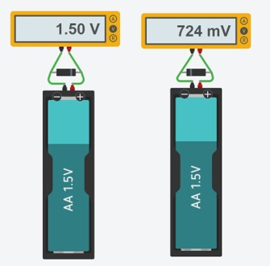
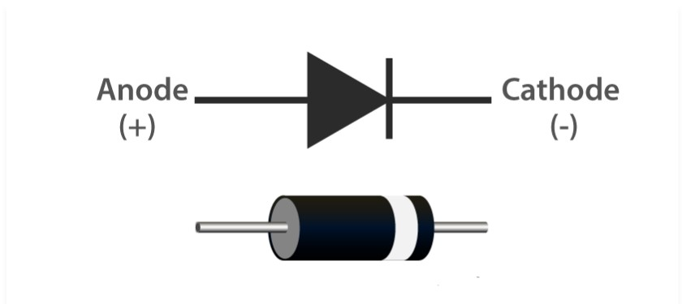
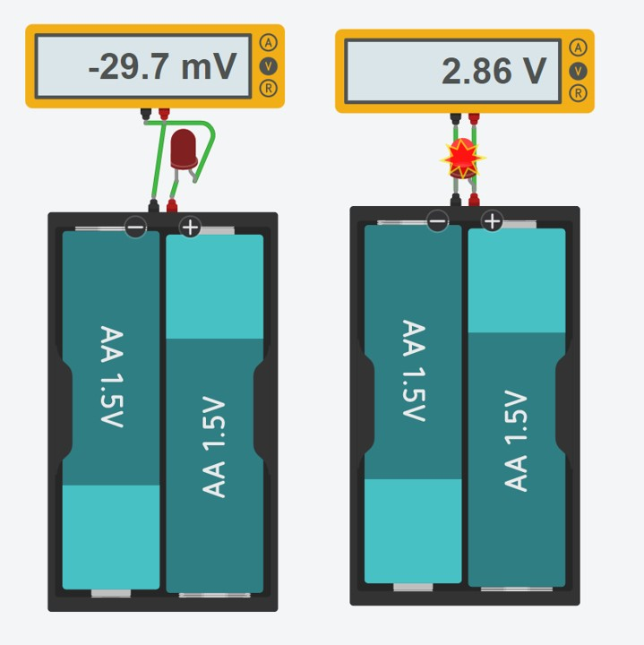
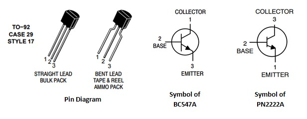
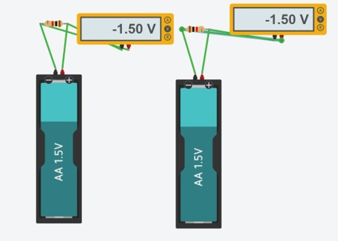
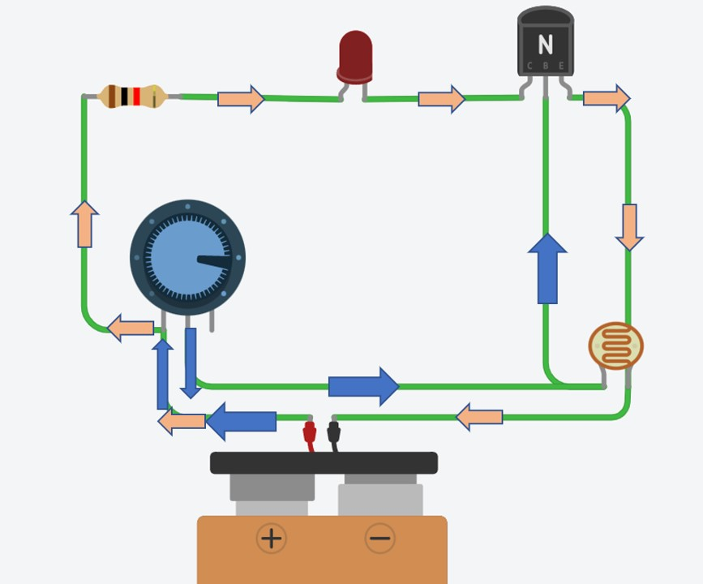

Overview
Playing with electricity has a great potential of fun. We will try to use much of it as we can while building exponentially harder circuits:)
Tips to Building and Debugging Circuits
When connecting things together, results are not always as clean as the whatever website says. Below are some of the simple, common errors that take moments to solve and hopefully not hours to know they even exist “like a mischievous semicolon in coding”
Short:
do not close a circuit without load. Connect a low-resistance component directly to the power source to avoid burning things up.Open:
do not forget to make a closed path for the flow of electricity. Make sure that no wires or components are faulty before working; you may disassemble the entire circuit because you think something is wrong while there is just a wire open to the infinitely resistant atmosphere.Polarity:
take care which side is connected where. For polar components, the long positive anode should eventually be connected to the vcc of the power source, and the short cathode should eventually be connected to the ground of the power source.Adding Context
This section will quickly cover the operating principals of diodes, capacitors, and NPN transistors.
Diodes
Moving on to a more interesting component, diodes. You can know more about their structure through this link. For now, we will just say they allow the flow of current in one direction. Notice how when we reverse the connection the voltage reading drops drastically from volts to millivolts. When diodes are connected with reversed terminals, they block the flow of electricity “to a certain point before collapsing like a senior student the night before physics exam”.
The previous diagram illustrates the polarity and connection of LEDs.
Notice how when we reverse connect the lamp it blocks the flow of current?
Capacitors
Watch the below video for illustration but in a nutshell, a capacitor stores energy as it charges and acts as an open circuit, and discharges and acts as a short circuit.Transistors
For deep info about transistors, check the refer to section at the bottom of the page. Now we will just deal with it as a switch: if there is current in the base, electricity will flow, if not, then it is like an open switch. That is it! Let's get down where the action is!!
Circuit 1: Calculate and Watch out
Components:
- LED
- Potentiometer
- Power source
- Fixed resistance
Functions and Expected Behaviors:
Resistors:
pretty actionless alone, all they do is to provide a bit longer path for electricity to flow, hence consume some current. They do not even have polarity as illustrated below The resistor in heart is just a long thin wire. Now, if we add another wire to make a circuit with a shorter part of the fixed long wire, voila you have variable resistance! For more illustration, see below how a potentiometer works from the inside out
To add context, let's connect a lamp to see what is realy happening after connecting power!
PS:you can find all the schematics, projects, and source files at the end of this page
Notice how when the pot is rotated all the way around the LED burns? Short circuit!! We eliminated resistance completely, return to the pot video and try to visualize the flow of electricity
Checking the Numbers
After trying out different values of resistance with the potentiometer, now we can pick a decent brightness and replace it with a fixed resistor. By simple physics, we know that V = IR. And by simple math, we can deduce that Vresistor * RLED = VLED * Rresistor. In the LED's datasheet: find the resistance and voltage of the lamp, subtract the VLED from total resistance, and solve for Rresistor.Circuit 2: right OR left?
Components:
- LED
- 2 switches
- Power source
- Fixed resistance
Functions and Expected Behaviors:
Switches:
How can different switches be manipulated to allow current flow under certain conditions? This circuit is meant to investigate what connections to apply if we want to implement certain logical commands -in other words creating logic gates.Using two switches allows each switch to work as an on and off, reverse to the other switch. It is an or gate!! The lamp needs o receive signal from one and only one switch in order to operate.
What if we replace the inputs and outputs of both switches?
With this little modification, the circuit can only operate if it receives two true signals. An and gate!
Circuit 3: Flashes
Components:
- LED
- Capacitor
- Power source
- Fixed resistance
Functions and Expected Behaviors:
Capacitors:
How do capacitors affect the behaviour of components in a circuit?Notice how the led only turns immediately after connecting power then drastically fades? Since the capacitor is connected in series with the lamp, it must act as a short circuit for the led to turn on. This is achieved when the capacitor is charging. Once it is done, it acts as an open circuit and the lighting dies…or not? Actually, both charging and discharging capacitors are exponential processes. You pretty much will not live to see the point where the capacitor truly fully discharges. Luckily, it is valid to assume things in physics “couldn’t attach my tinkercad sim for this since I don’t want my device to go into an infinite loop”
Would it matter if the capacitor is connected in series or parallel?
Parallel: the fading rate decreases --> the ability to store electricity increases --> higher capacitance
Series: fading rate increases --> the ability to store electricity decreases --> lower capacitance
Voltage is divided in series, so the capacitors take a longer time to charge. In parallel connections, voltage is the same in all paths hence all capacitors charge simultaneously with the same max voltage.
Circuit 4: Sensors Calibrated
Components:
- LED
- Photoresistor
- Power source
- Transistor
- Potentiometer
- Fixed resistance
Functions and Expected Behaviors:
Photoresistor
LDRs or photoresistors change resistance according to surrounding brightness. When there is no light around, it has a huge resistance value.What is happening up there? A key fact to start with: more current flows in the path of least resistance. When it is dark, the LDR has high resistance. Therefore, current skips the LDR and flows into the transistor's base switching it on and closing the LED's circuit. See below for an illustration of the current flow.
Blue arrows represent the current that activates the transistor. Pink arrows represent the current that activates the lamp. Notice that no current passes through the LDR.

When it is bright, the LDR has low resistance. Therefore, current flows through the LDR and skips the transistor's base, keeping it off.
Now what happens if we swap the potentiometer and the transistor?
The LDR is now not connected to the transistor, therefore it lost its control over the LED. Lighting now is dependent only on the potentiometer regardless of the sensor's reading.
References
[1] Potentiometer
[2] Capacitors
[3] Circuit 1
[4] Circuit 2
[5] Circuit 4